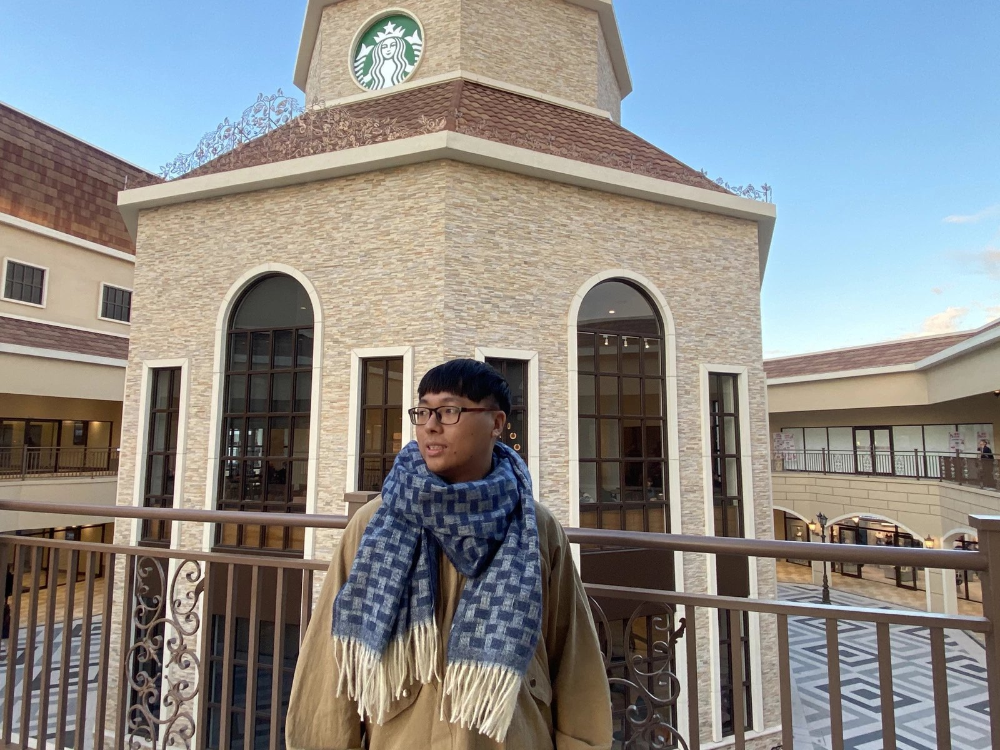

●個人簡歷
您好，我是白昕，現年24歲。目前在群創光電擔任CIM製造資訊整合工程師。
成為軟體工程師一直是我的夢想，很高興能在第一份工作就順利從事軟體的資訊人員。
但我深知自己離優秀的軟體工程師還有很長的一段路要走，為了成為理想中的樣子，我會持續學習。
●為什麼想成為工程師?
從高中開始接觸到程式語言的課程讓我非常有興趣，因此種下我想成為軟體人員的種子。
很幸運的現在的工作已經是軟體工程師。在工作的過程中，每次完成新的需求開發，或是解決異常的Bug，
我都能得到非常大的成就感。因此我很確定軟體工程師就是我理想的工作。
●為了成為工程師，曾經做過什麼努力?
起初在工作時，有許多的技術是我不曾接觸過的。但為了證明自己可以，
我利用空閒的時間來練習學習到的技術。讓我在工作方便快速上手。
我喜歡花時間在自己喜愛的領域上，唯有不斷的練習，才能達成自己的目標。
●對於工程師的職業想像是什麼?
對我來說，在工作之前我想像的工程師，是每天再開發新的東西。利用程式語言來實現，
想做的東西。工作之後，其實跟自己所想像的落差不大，除了要開發User的需求，維運系統也是一項很重要事情。
●如果參與這個計畫，會怎麼安排學習時間?
很慶幸自己的工作時間很穩定，基本上不會有加班的情形。所以我可以利用平日的晚上來學習新的技術。
假日只要沒有特別安排事項，也都可以全心投入在這次的計畫中。
●如果參與這個計畫，預期會碰到什麼困難?你打算怎麼解決它?
我預期一定會遇到很多新的技術是沒有接觸過的，所以要把自己歸零，投入大量的時間來練習所學到的東西。
與他人討論是我在工作中體悟到很重要的一點，所以我希望能在這次計畫中，與同學老師們溝通討論，激發出不同的想法。
●想對我們說的事情?
謝謝彭彭老師舉辦這次的計畫，之前在您的影片中學習到很多東西，期許這次能在計畫中，讓我能夠更加的成長！
老師辛苦了，一起加油！